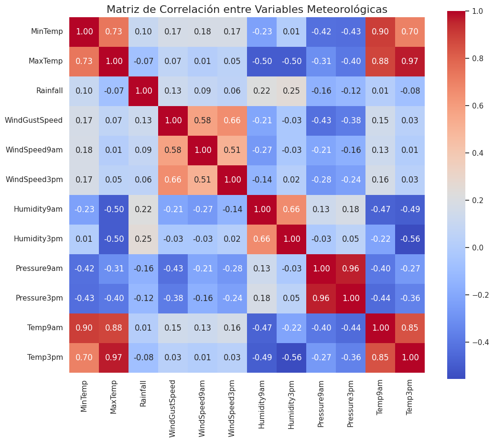

🎯 Propósito
Analizar datos meteorológicos y aplicar modelos de minería para contar una historia clara, visual y persuasiva, enfocada en las condiciones de lluvia.
📊 1. Exploración de Datos
Se analizaron variables meteorológicas como temperatura, humedad, viento y lluvia.

🌳 2. Árbol de Decisión
Se aplicó un modelo de Árbol de Decisión para predecir la ocurrencia de lluvia con base en variables climáticas seleccionadas.

🔗 3. Correlación entre Variables
Se evaluó la correlación entre las distintas variables meteorológicas.
📈 4. Clustering de Condiciones Climáticas
Utilizando K-Means, se identificaron grupos con condiciones meteorológicas similares para observar patrones asociados a la lluvia.